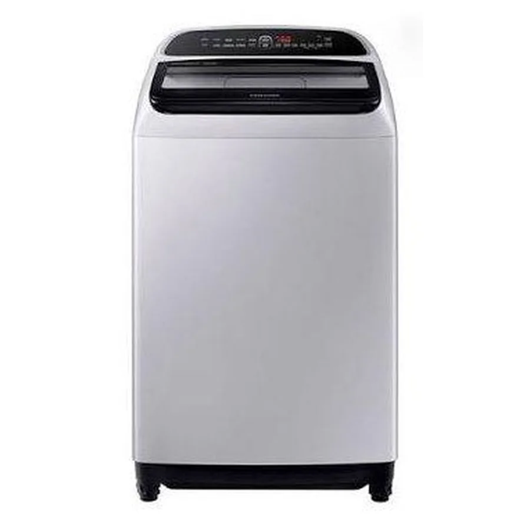

Qué reparamos
Modelos y tipos de lavadora Samsung que atendemos a domicilio en Quito:
- Carga superior
- Carga frontal
- Lavadoras con inverter y motor de transmisión directa
- Lavadoras con pantalla digital y códigos de error
- Lavasecadoras (lavan y secan en un solo equipo)
Fallas comunes de lavadora Samsung
Cada falla tiene su propia página con causas, qué revisar y cuándo llamar.
- No centrifuga o centrifuga con mucho ruido Revisar pronto
Carga desbalanceada, amortiguadores o rodamientos desgastados, o problema del motor. - No desagua (queda agua en la tina) Revisar pronto
Filtro de desagüe tapado, bomba de desagüe o manguera obstruida. - No llena de agua o llena muy lento Revisar pronto
Llaves cerradas, malla de la manguera tapada, válvula de entrada o sensor de nivel. - Gotea o se sale el agua Urgente
Mangueras flojas, empaque de la puerta (en carga frontal), bomba o tina. - La puerta no abre o no cierra Revisar pronto
Seguro de la puerta (cerradura) o bisagra desgastada. - Muestra el código UE o vibra mucho Vigilar
Carga desbalanceada o patas sin nivelar. - Huele mal o tiene moho Vigilar
Humedad, exceso de detergente, empaque sucio o filtro lleno de pelusas. - No enciende o se apaga en medio del ciclo Urgente
Tarjeta de control, tomacorriente, variaciones de voltaje o falla del seguro. - Deja pelusas o la ropa sale con residuos Vigilar
Filtro de pelusas saturado o roto, exceso de detergente. - Muestra el código 5E o SE (no desagua) Revisar pronto
Filtro de desagüe tapado, manguera obstruida o bomba de desagüe con falla. - Muestra el código 4E (no entra agua) Revisar pronto
Llaves cerradas, mallas tapadas, baja presión o válvula de entrada con falla. - La puerta AddWash gotea Revisar pronto
Empaque o seguro de la compuerta AddWash sucio o desajustado. - No conecta a la app SmartThings Vigilar
Red Wi-Fi 2.4 GHz mal configurada o módulo Wi-Fi con falla. - El tambor no gira Revisar pronto
Correa suelta o rota (carga superior), motor, acople, tarjeta de control o carga excesiva. - No agita la ropa Revisar pronto
Acople del agitador, transmisión, motor o seguro de la tapa. - Se detiene a mitad del ciclo Revisar pronto
Carga desbalanceada, nivel de agua que no se detecta, seguro de puerta, tarjeta de control o variaciones de voltaje. - Hace ruido fuerte al centrifugar Revisar pronto
Amortiguadores o rodamientos desgastados, objetos atrapados, patas sin nivelar o carga desbalanceada. - No dispensa el suavizante o el detergente Vigilar
Dispensador tapado por residuos, válvula de entrada de agua o baja presión de agua.
Servicios para lavadora Samsung en Quito
Reparar, dónde reparar, cuánto cuesta y más:
- Reparar la lavadora Samsung en Quito
- Dónde reparar la lavadora Samsung en Quito
- Cuánto cuesta reparar la lavadora Samsung en Quito
- Arreglo de lavadoras Samsung en Quito
- Técnico de lavadoras a domicilio en Quito
- Técnico de lavadoras Samsung a domicilio en Quito
- Técnico de lavadoras Samsung urgente en Quito
- Reparación de lavadoras de carga frontal Samsung en Quito
- Reparación de lavadoras de carga superior Samsung en Quito
- Reparación de lavadoras en Quito
- Reparación de lavadoras Samsung AddWash en Quito
- Reparación de lavadoras Samsung Digital Inverter en Quito
- Reparación de lavadoras Samsung EcoBubble en Quito
- Reparación de lavadoras Samsung en el centro de Quito
- Reparación de lavadoras Samsung en el norte de Quito
- Reparación de lavadoras Samsung en el sur de Quito
- Reparación de lavadoras Samsung en los valles de Quito
- Mantenimiento de lavadoras Samsung en Quito
- Instalación de lavadoras y secadoras Samsung en Quito
- Centro de servicio de lavadoras Samsung en Quito
- Cotizar la reparación de lavadoras Samsung en Quito
- Lavadora Samsung código HE o HC: problema del calentador
- Lavadora Samsung código LE o LC: fuga de agua
- Lavadora Samsung muestra SUD: exceso de espuma
- Qué incluye la visita de servicio técnico Samsung en Quito
- Repuestos para lavadoras Samsung en Quito
- Servicio técnico de lavadoras Samsung en Quito
- Servicio técnico Samsung Ecuador: atención en Quito
- Soporte técnico Samsung en Quito
Qué hacemos en la visita
Vamos a tu casa, probamos la lavadora en su lugar de uso, identificamos la causa y te explicamos qué tiene antes de tocar nada.
- Diagnóstico de la falla
- Costo confirmado antes de reparar
- Reparación y prueba de funcionamiento
- Recomendaciones para que no se repita
Mantenimiento para que la lavadora dure más
- Limpia el filtro de pelusas cada 3 o 4 lavadas.
- Haz una limpieza de tina cada mes con el programa de autolimpieza o con agua caliente.
- Deja la puerta o la tapa abierta después de lavar para que se seque.
- Usa la cantidad de detergente recomendada, sobre todo en detergentes líquidos.
- Revisa las mangueras cada 6 meses: busca grietas o humedad.
- Verifica que la lavadora esté nivelada y que no haya objetos en los bolsillos.
Antes de llamar: seguridad y datos
Seguridad primero
Cierra la llave de agua y desconecta la lavadora antes de revisar mangueras o filtros. Ten toallas a mano: al abrir el filtro de desagüe sale agua.
Qué enviarnos por WhatsApp
Para orientarte más rápido, envíanos marca y modelo (la etiqueta suele estar en la parte trasera o en el borde de la tapa o la puerta), si es de carga superior o frontal y el código de error que muestra la pantalla. Una foto de la etiqueta y un video corto de la falla ayudan mucho.
Particularidades de Quito
En Quito muchas lavanderías están en terrazas o patios con lluvia; revisa que el tomacorriente esté protegido y que las mangueras no queden al sol ni a la intemperie.
Dónde atendemos: lavadora Samsung por zona
Elige tu barrio para ver el servicio a domicilio de lavadora Samsung en tu zona:
Norte de Quito
Centro de Quito
Sur de Quito
Valles de Quito
Guías relacionadas
- Códigos de error de la lavadora Samsung: qué significan y qué hacer
- Moho y mal olor en la lavadora: cómo evitarlo
- Cómo nivelar una lavadora Samsung para que no vibre
- Lavadora Samsung de carga superior o frontal: ¿cuál conviene?
- Checklist anual de mantenimiento de los electrodomésticos del hogar
- Lavadora que no llena de agua: baja presión y otras causas
- Ruidos en la lavadora: qué significan y cuándo llamar al técnico
Preguntas frecuentes
¿Qué significan los códigos de error de la lavadora Samsung?
Algunos muy comunes: UE (carga desbalanceada), 5E o SE (problema de desagüe), 4E (entrada de agua), dE o DC (puerta) y LE (posible fuga de agua). Si el código no se va tras revisar lo básico, escríbenos.
¿Por qué mi lavadora Samsung no centrifuga?
La causa más común es una carga desbalanceada. Si pasa también con poca ropa, pueden ser los amortiguadores, el rodamiento o el motor.
¿Reparan lavadoras de carga superior y frontal?
Sí, atendemos las dos.
¿Puedo seguir usando la lavadora si gotea?
No lo recomendamos: el agua puede dañar el piso o las conexiones eléctricas. Cierra la llave y desconecta.
¿Cuánto cuesta la visita de diagnóstico?
Escríbenos por WhatsApp con el modelo y la falla; te confirmamos el costo de la visita antes de ir.
¿Atienden en apartamentos y torres?
Sí. Coordinamos horario y acceso con la administración del edificio.
¿Reparan lavadoras Samsung con EcoBubble y AddWash?
Sí, atendemos lavadoras Samsung de carga frontal y superior, incluyendo la compuerta AddWash y los problemas de conexión SmartThings.
¿Qué significa 5E en una lavadora Samsung?
Problema de desagüe: filtro, manguera o bomba.